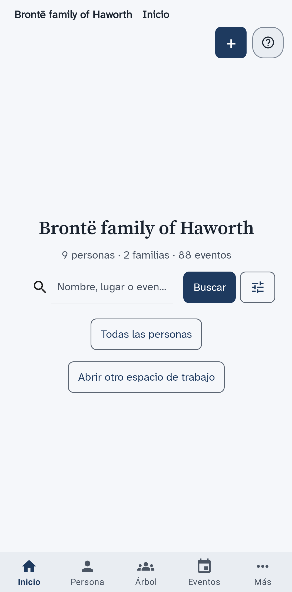
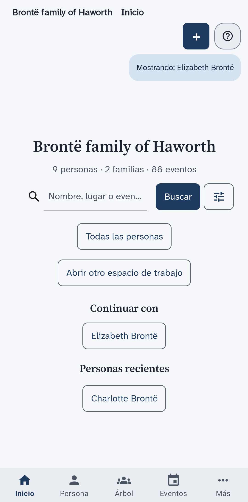

Inicio rápido
Seis páginas cortas que le llevan desde abrir uFTi hasta su primera persona, con su fuente y una copia.
Tarda unos diez minutos. Cada página tiene unos pocos pasos. Hágalos en orden.
Entender la información de los árboles genealógicos
Oughtibridge Ltd
© 2026 Oughtibridge Ltd
Esta publicación está disponible en https://docs.ufti.com/android-phone/Alpha-2/inicio-rapido/
Seis páginas cortas que le llevan desde abrir uFTi hasta su primera persona, con su fuente y una copia.
Tarda unos diez minutos. Cada página tiene unos pocos pasos. Hágalos en orden.
Abra uFTi por primera vez.
Un espacio de trabajo es un árbol genealógico.
Se abre en Inicio, con un árbol de ejemplo.
El árbol de ejemplo es la familia Brontë. Sirve para practicar. No lo necesita para su propio árbol.

Siguiente: Añadir su primera persona.
Cree su propio espacio de trabajo y añádase a usted, o a alguien que conozca bien.
Siguiente: Echar un vistazo.
Vea qué hacen los cinco lugares de la barra con la persona que añadió.
Antes, añada una persona.
La barra de abajo de la pantalla muestra los lugares principales. Casi todos muestran a la persona que está mirando.
Para volver una pantalla atrás, elija la flecha de volver.

Siguiente: Decir dónde lo encontró.
Añada una fuente a un hecho, para saber siempre por qué lo cree.
Abra la página de una persona.
Para buscar a una persona, escriba su nombre en el cuadro de búsqueda y elija Buscar. Luego elija la tarjeta con su nombre.
El hecho ya tiene una fuente. Más adelante, cuando dos registros no coincidan, así sabrá qué creer.
Siguiente: Guardar una copia.
Guarde una copia de su árbol en un archivo, y guárdela también en otro sitio.
Ya tiene una copia. Haga otra después de añadir mucho. Para enviarla por correo, búsquela en la aplicación Archivos. Guarde también una copia fuera de su teléfono.
Siguiente: Qué hacer ahora.
Ya tiene un árbol, una persona, un hecho con su fuente y una copia, así que elija por dónde seguir.
¡Bien hecho! ¿Qué quiere hacer ahora?
Las cinco ideas en las que se basa uFTi, en dos minutos.
Puede tener más de uno. Para verlos, elija Más y luego Espacios. Cada uno es una tarjeta. Cree un espacio de trabajo nuevo para cada árbol.
Añada una persona por cada pariente. Una familia une a una pareja. uFTi dibuja un árbol con sus familias. Elija Árbol para verlo.
Un hecho es algo que usted anota, como un nacimiento con su fecha. Una fuente es donde lo encontró. Puede ser un certificado, una hoja de un censo o lo que alguien le contó. En la página de una persona, junto a cada título, una pequeña etiqueta cuenta las fuentes. Elija la etiqueta para añadir una. Así siempre sabrá por qué cree un hecho.
uFTi guarda su trabajo mientras usted trabaja. Para tener una copia, elija Guardar como… en la tarjeta de su espacio de trabajo. Guarde el archivo también en otro sitio. Hágalo de nuevo después de una sesión larga.
Mire esta guía cuando no sepa seguir. Use su cuadro de búsqueda y escriba las palabras que usted diría. Practique en un espacio de trabajo que cree para eso.
Un árbol genealógico dibujado para una persona. Muestra a sus padres encima, y a sus parejas e hijos.
Un archivo GEDCOM que guarda un árbol genealógico entero, con sus personas, familias, hechos, fuentes y notas de investigación. No guarda imágenes ni otros archivos añadidos. Puede abrir uno, guardar uno y enviar uno.
Un árbol genealógico y todo lo que se guarda con él. Es decir, el archivo del árbol con sus notas de investigación, y las imágenes y otros archivos que añade. Un archivo GEDZIP lo guarda todo. Puede tener más de uno.
Donde encontró un hecho. Puede ser un certificado, una hoja de un censo, un libro o lo que alguien le contó.
El formato estándar de los archivos de árboles genealógicos. Muchos programas de genealogía lo leen. GEDCOM 5.5.1 se publicó en 1999. Ha sido el formato común durante más de veinte años. GEDCOM 7, publicado en 2021, es la versión nueva. Una versión es del estándar, no de uFTi.
Un archivo que guarda un espacio de trabajo entero. Tiene el árbol genealógico con sus notas de investigación, y las imágenes y otros archivos. Es la mejor forma de guardar y enviar su trabajo.
Algo que anota sobre una persona, como un nacimiento con su fecha y su lugar.